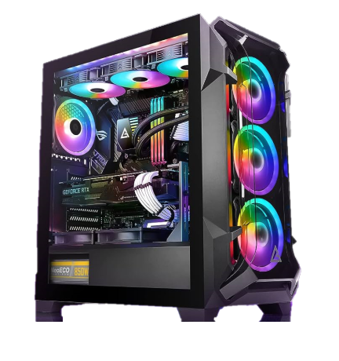

what is my hobbies


- You are a sports enthusiast and a technology aficionado, with a particular interest in computers and especially smartphones.
- Your passion for sports leads you to engage in various athletic activities, possibly as part of a team or just to maintain personal fitness. This hobby not only helps you stay physically and mentally healthy but also provides a great way to unwind from the daily routine.
- In the realm of technology, your interest in computers and especially in smartphones reflects a leaning towards innovation and staying up-to-date. You likely follow the latest technological advancements, enjoy exploring and experimenting with new devices, and understand the latest developments in software and hardware.
- This hobby is not only interesting and engaging but also enhances your understanding in the fast-evolving tech field.
- The combination of hobbies in both sports and technology indicates a dynamic and in-depth lifestyle, where you balance physical activity with a deep interest in the technological world.